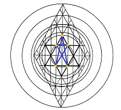

|
Back
in the Wilderness: the Rough Places, Plain
Malkuth:
The Church at Ephesus
Take my yoke upon thee, and learn of me.
Unto the angel of the church of
Ephesus write; These things saith he that holdeth the seven stars in his
right hand, who walketh in the midst of the seven golden candlesticks; I
know thy works, and thy labour, and thy patience, and how thou canst not
bear them which are evil: and thou hast tried them which say they are
apostles, and are not, and hast found them liars: And hast borne, and
hast patience, and for my name's sake hast laboured, and hast not
fainted;
Nevertheless I have somewhat against thee, because thou
hast left thy first love. Remember therefore from whence thou art
fallen, and repent, and do the first works; or else I will come unto
thee quickly, and will remove thy candlestick out of his place, except
thou repent.
But this thou hast, that thou hatest the deeds of
the Nicolaitans, which I also hate. He that hath an ear, let him hear
what the Spirit saith unto the churches; To him that
overcometh will I
give to eat of the tree of life, which is in the midst of the paradise
of Elohim.
When Kether is the point of origin in study of
the
sephiroth, Malkuth can be understood as fruition; but when Malkuth
is the beginning focus, the sphere is best understood as conception.
Visually, Kether and Malkuth appear to be positioned at opposite ends of
a continuum; whereas in fact, however, they are more like an alignment
of points located on a vast spiral; and the values represented by those
points-- their significances-- are determined chiefly by the direction
of approach in the illusory dynamics of time.
The linear aspect
of the inward journey from Malkuth to Kether is experienced by our
minds; the spiraling aspect, by our spirits. The kindred relationship
between the two spheres is understood even in their names: Malkuth is
translated as "Kingdom" and is often associated with the tribe of
Ephraim; Kether is rendered as "Crown," in association with Judah.
The journey from Malkuth to Kether, then, entails the reunification
of the broken sticks of the Davidic Kingdom. Ten (Malkuth) is, after
all, another level of One (Kether); and in various studies throughout
the centuries, several
Adam Kadmons have been stacked, one above
another, to signify progressive revelation, with Malkuth and Kether
interchanging at successive levels of symbolic thought. This tradition
recalls the Isaiah precept, HaShem's word to them was "here a little,
and there a little."
In the ascending progression, which moves
from thoughts of the created order to meditations upon the nature of
Elohim, the student advances from Malkuth to Kether, finding in Kether
insights that generate understanding that forms a new and richer
understanding of Malkuth, from which to begin again. In the descending
progression, which moves from conceptions of Elohim to conclusions on
the nature of his creation, Malkuth transforms into another order of
Kether-- into new understandings of Elohim.
Using Malkuth as
point of departure, we focus upon revelations of the first Adam, as
known in our mortal tabernacles, seeking understanding of corollary
implications for the walk in the second Adam. The sephiroth are also
known as "emanations," or the pouring forth of Light. As Malkuth is the
root, or lowermost manifestation, of the Tree of Life, we consider our
bodies to discover the lower-most member responsible for the
manifestation of the physiological equivalent of light, or because of
which conscious, motivational thought is routinely generated, equating
that member, and its functions, with Malkuth.
We adopt this
procedure because of the unity of scriptural imagery: the menorah, or
"candlestick," of the tabernacle of Moses is the prototype for both the
seven candlesticks of the message to the Churches of Asia and, in a
mystery, for the ten silver and ten golden candlesticks of the temple
built by Solomon.
The revelation to Moses is that these seven
lights are branches of one holder; the revelation to John the Revelator
is that the lights are perceived as functioning individually, being
united in the High Priest who both holds and moves among their lights,
and whose Father is the Light thereof.
That it is possible for
the candlesticks to be removed out of their places (compare, "if thy
right eye offend thee"), connects this imagery loosely with Paul's
teachings on the wild (silver) branches and the natural (golden)
branches of the olive tree, a symbol of the Life Tree as revealed in
Man, the Temple of Elohim.
The wild olive's branches are the ten
silver candlesticks of Solomon's Temple, whose place was not specified
in that revelation. The natural olive's branches are the ten golden
candlesticks, which served to light the way into the holy of holies,
proper home of the true Menorah. In Messiah, both the wild and natural
olive branches are grafted into the true, Eternal Olive, the Tree of
Light, which Light is made visible by the Life in man.
As there
is but one Church-- one Menorah, one united Olive Tree, one Body-- and
as the messages are sent to the seven churches that are in Asia, we
conclude that Asia, lair of the fabled Dragon, is a symbol of the
libidinal attributes of the flesh as measured in the astral plane, and
that the individual churches of Asia are symbolic of the energies
operative within the physical forms and faculties housed by the flesh--
by body, by earth, by galaxy, by universe. The flesh may be weak, but it
is not unholy; for the flesh is also the Temple in which the spiritual
churches of Asia congregate to worship Elohim.
When the messages
actually begin, moreover, it is not the churches, or body faculties,
that are addressed directly, but the angel of the church assembled at
each city, or dominion, of Asia. As the manifested existence of angels
is in heavenly realms, the angel of each church of Asia is interpreted
as being equivalent to that portion of the unconscious mind exercising
control or spiritual oversight upon the locale entrusted to its
supervision: upon those forms and faculties in its domain.
That
the angels are addressed and that the churches are all invited to hear
interiorizes the teaching by Paul, "we wrestle not against flesh and
blood, but against principalities, against powers, against the rulers of
the darkness of this world, against spiritual wickedness in high
places." We do not imply that the angels of the churches of Asia are
wicked, but that they are subject to wickedness as they succumb to the
gravitational pull of lower, subterranean realms, forgetting their place
of origin and their ultimate destiny.
The same judgment applies
to the forms and functions ministered to by the angels of the churches
of Asia as to the angels themselves: there is no wickedness in the flesh
itself, nor, necessarily, in the exercise of its faculties (as supposed
by the Nicolaitans, who practiced a rigid asceticism that indirectly
accuses the wisdom of the Creator in providing His creatures with such
troublesome dynamisms as are found in the flesh), but only in the uses
to which the flesh may be subjected at the instigation of a faulty will
or under the magnetism of a faulty inclination.
Human will is a
faculty that operates as from below, and inclination is a force exerted
as from above. The ancient maxim applies: as above, so below; and,
inversely, as below, so above (compare
Matt. 18:18). The act of will is
answered by increase of inclination, whether according to the law of sin
unto death or to the law of redemption under grace unto eternal life.
In his message to
Ephesus,
Yahushúa both commends and criticizes the fidelity of the
libidinal angel, speaking through him to the congregations of all of
Asia, which churches we have interpreted as representing the
collective
forms, functions, and faculties of the human body. The roots of fidelity
among humans are found in the reproductive organs and the emotional and
intellectual complexes involved therein. The judgment, "thou hast left
thy first love," positions the axe head precisely at the root of the
Life Tree in each of us. This root is Malkuth, the bridal chamber.
Even so, baptism into Messiah is as a wedding,
making of twain a new
man: wherefore they are no more two, but one flesh-- one Body. The
fruition of that union is as a birth-- the emergence of One. In birth,
the head is presented first, in the process called "crowning." Again, we
see the close relationship of the spheres Malkuth and Kether.
If
we die daily to the isolation of sin that Messiah may be born anew in
us, we also are resurrected daily into His life. It is this daily
sacrifice of self and daily rebirth that builds faithfulness in the
chamber of Malkuth. As we renew fidelity in Ephesus, the allegiance of
the angel is assured; for he will be bound by the strength of proper
nourishment flowing into the Tree from its roots.
|
{kind=link}